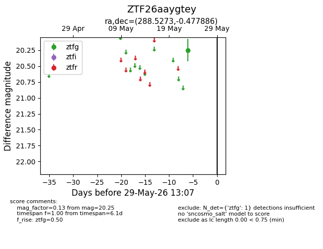
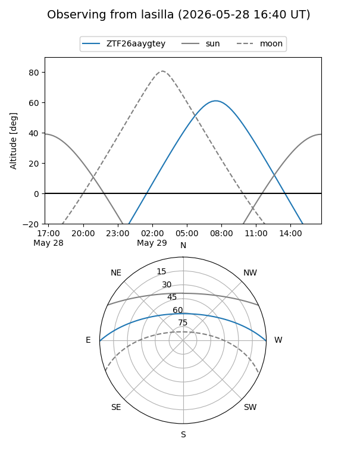
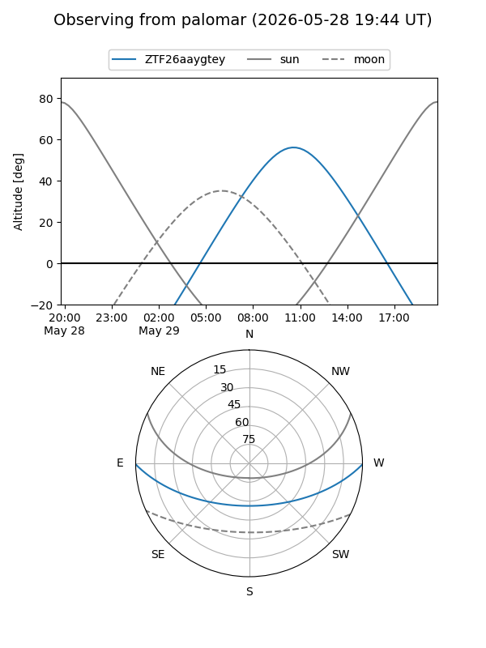

ZTF26aaygtey
Target ZTF26aaygtey at 2026-05-29 13:08
Aliases and brokers:
lsst-FINK: link
lsst-Lasair: link
lsst-ALeRCE: link
ztf-FINK: link
ztf-Lasair: link
ztf-ALeRCE: link
alt names
ZTF26aaygtey (ztf,fink_ztf)
Coordinates:
equatorial (ra, dec) = 288.5273,-0.47789
equatorial (HMS+DMS) = 19:14:06.55,-00:28:40.39
galactic (l, b) = (35.0964,-5.26117)
Flags:
Photometry:
last ztfg=20.25
1 ztfg detections
Lightcurve

Visibility


Additional plots